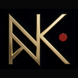

Photography / 01
01 / 07
Theatre ofMarcellus
Teatro di Marcello
02 / 07
TheArcades
Stone and shadow
03 / 07
PiazzaNavona
Fountain of the Four Rivers
04 / 07
Arch ofConstantine
Arco di Costantino
05 / 07
ThePantheon
Piazza della Rotonda
06 / 07
Pompeii
Fountain detail
07 / 07
TheRuins
Columns and old streets